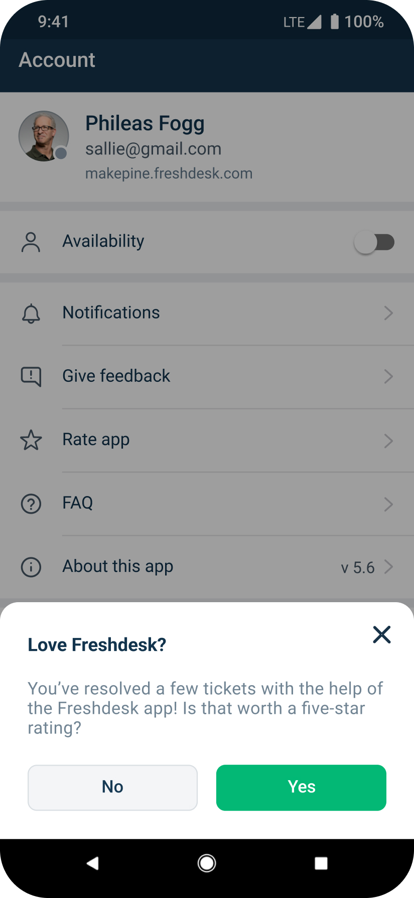
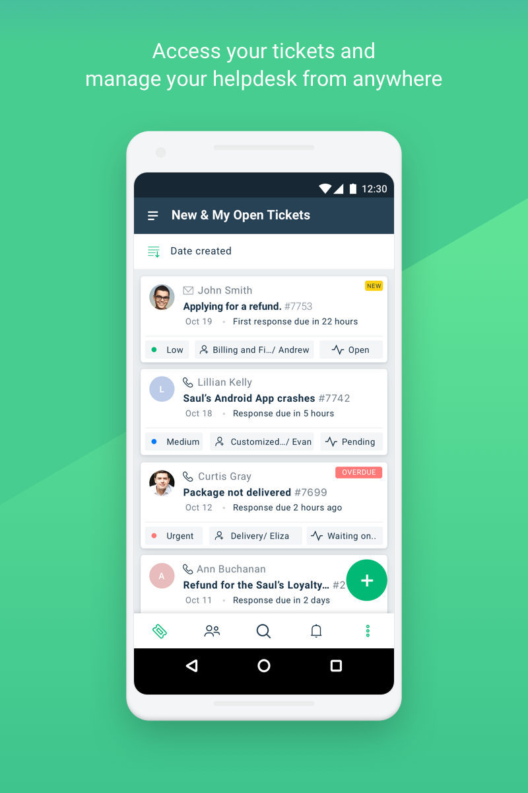
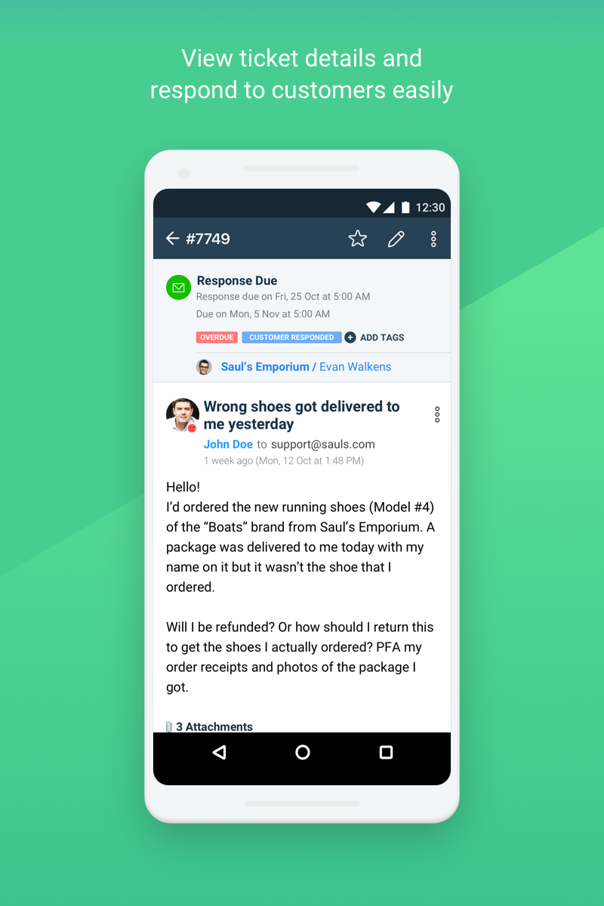
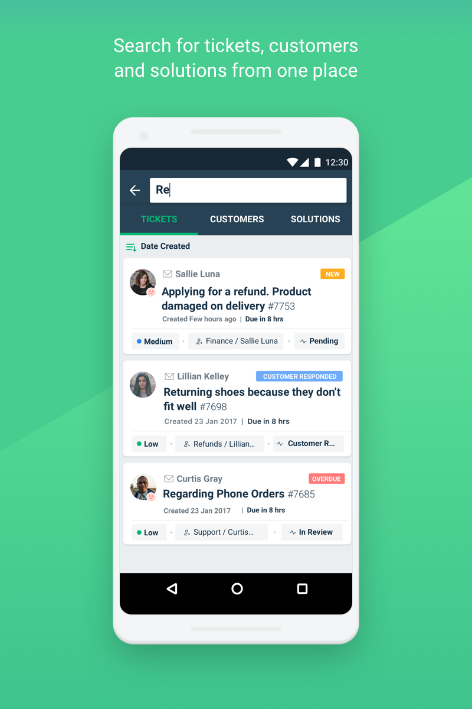
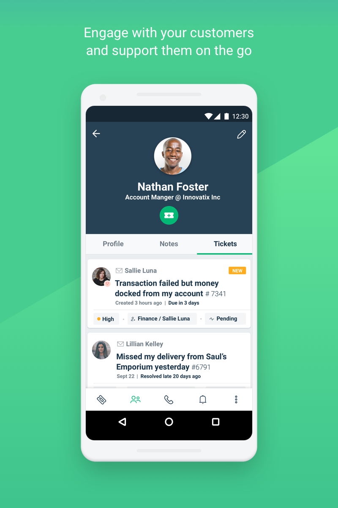
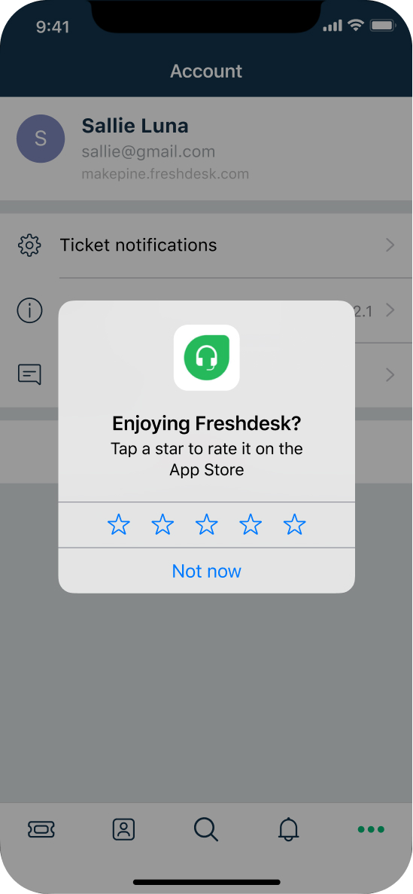

How redesigning feedback improved Freshdesk from 1.2★ to 4.5★
Redesigned Freshdesk's mobile feedback and review experience to improve App Store ratings, create a transparent review flow, and establish a scalable feedback system that enabled the product team to learn directly from users.

The Problem
Despite being used daily by customer support teams, the app held a 1.2★ rating across the App Store and Play Store. The obvious solution was to ask more users for reviews. The better solution was to redesign how we listened to them.

Why this mattered
App store ratings influence whether people download an app before they ever experience it. Low ratings affected user confidence, but another problem existed internally.
Mobile feedback was mixed with general support tickets, making it difficult for designers and product managers to identify recurring issues and prioritize improvements. The challenge wasn't just increasing ratings. It was building a better feedback loop between users and the product team.
The obvious solution wasn't the right one
The first version was simple: five stars sent you straight to the App Store, anything less opened a feedback form. It would have worked—ratings would've gone up.
But users weren't choosing to rate us; they were being routed there without knowing it. I brought this to our Product Manager as a dark pattern, not a growth tactic, and made the case that we'd be trading a real metric today for a trust problem later. We agreed to slow down and try something more honest, even though it meant giving up the fast path to a rating bump.

Transparency solved one problem, but created another
Our next iteration separated the actions into two clear choices: Rate Us or Give Feedback. The experience became honest and aligned with user expectations, but engagement remained lower than expected.
Users now understood their choices, yet we were still asking for reviews without considering whether they had actually experienced enough value. The problem wasn't the interface. It was the timing.

We were asking at the wrong moment
Instead of asking everyone for a review, I focused on identifying when users were most likely to feel successful. The review prompt appeared only after users had resolved five tickets or had actively used the app for ten days.
Rather than sending users directly to the store, we asked a simple question: "Love Freshdesk? You've resolved a few tickets using the app. Is it worth a 5-star rating?"
Users who selected No were immediately given an opportunity to explain their experience through an in-app feedback form, while users who selected Yes were taken directly to the platform's native review flow.
This balanced business goals with user trust while respecting Apple's and Google's limitations on how frequently native review prompts could appear.

Ratings weren't our only blind spot
While redesigning the review experience, we uncovered another opportunity. Feedback submitted from mobile devices wasn't distinguishable from other support requests.
To solve this, every submission created through Give Feedback automatically generated a support ticket tagged Mobile, with optional screenshot attachments. This gave product managers and designers direct visibility into mobile-specific issues without relying solely on support summaries. Instead of simply increasing ratings, we created a continuous feedback system that improved how the team learned from users.
Three months later...
The redesign delivered more than better ratings. Freshdesk's mobile app improved from 1.2★ to 4.5★ across the App Store and Play Store within three months.
Beyond the public rating, the redesign also:
- Increased review submissions by prompting users after successful experiences.
- Created a dedicated feedback channel with screenshot support.
- Improved issue prioritization through automatically tagged Mobile support tickets.
- Direct monitoring allowing product managers and designers to monitor customer feedback directly.
- Established a reusable pattern that was later adopted by Freshchat and Freshcaller.

Reflection
I began this project thinking the challenge was improving App Store ratings. Through multiple iterations, stakeholder discussions, and conversations with our support team, I realized the real challenge was building a feedback experience users could trust.
When users feel heard, they're far more willing to advocate for your product. That shift in thinking changed how I approach growth features today.
“Good product design doesn't optimize for better metrics first. It earns better metrics by creating better user experiences.”